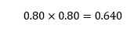
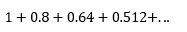
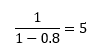
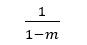
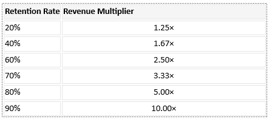
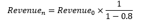
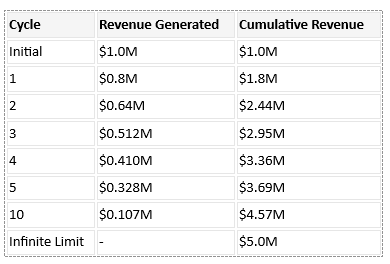

@rawbooty2 on X.com
Version 1.0 · November 12, 2026
The AI Capital Multiplier
Abstract
A commonly held assumption is that demand for AI infrastructure is driven primarily by the economic value generated by AI applications. But what if a second mechanism exists, one more commonly associated with banking than technology? And what if this mechanism is responsible for most of the growth?
What I will show is that, under specific conditions, a high-margin infrastructure provider (such as NVDA, SNDK, or MU) can recursively recycle profits into its customer base, generating additional demand for its own products, potentially far beyond what would otherwise be economically sustainable.
The concept itself is not new. Forms of circular financing have existed for decades. The question is how the dynamics change as gross margins increase and the provider becomes both the source and beneficiary of ecosystem capital formation.
The central observation is that a capital multiplication process can emerge in which a single dollar of external demand produces multiple dollars of cumulative infrastructure revenue. The mechanism is analogous to fractional reserve banking, not because money is literally created, but because purchasing power is recursively redeployed through a partially closed ecosystem, producing a similar expansionary effect.
For a company such as $NVDA, the implications are profound. As margins rise, retained earnings become a source of investable capital that can be redeployed into customers, partners, and adjacent market participants. In effect, the company's own balance sheet becomes both a source of capital creation and a primary beneficiary of the resulting demand expansion. The result is a self-reinforcing cycle in which infrastructure revenue generates investment capacity, investment capacity generates infrastructure demand, and the process repeats.
Let’s First Examine the Core Observation
The AI supply chain is commonly assumed to be a normal, linear process where Application Demand creates Infrastructure Purchases which in turn creates Infrastructure Revenue. This model places infrastructure vendors as largely passive recipients of demand generated elsewhere in the economy. In short, they are simply suppliers of capital goods. Typically, these businesses have fairly low gross margins.
The question that needs to be studied, is what happens as gross margins increase? The answer is that a different structure becomes economically viable. One where a dominant infrastructure provider can leverage the extraordinary margins to reinvests a portion of those profits into customers who subsequently purchase more infrastructure. This creates a kind of feedback loop.
So instead of a normal linear relationship:
Application Demand → Infrastructure Purchases → Infrastructure Revenue
We get something circular:
Infrastructure Revenue → Profit → Customer Investment → Infrastructure Purchases → Infrastructure Revenue
Importantly, demand stops being purely external, a portion of future demand is generated by recycling prior demand.
Let’s Look at A Toy Model
First let’s assume company (a) generates $1.00 of revenue from an external customer. Under this model the business will have 80% gross margins:
COGS: $0.20
Retained cash flow: $0.80
Now let’s assume the company (a) invests the $0.80 of retained cashflow into an external, unrelated startup (b) in need of the company (a)’s products.
The (b) then receives $0.80 in cash, or company’s (a)’s credit, and then immediately spends the entire $0.80 purchasing the company (a)'s products.
The company (a) again retains 80% of the $0.80 invested in (b):

This $0.64 can once again be reinvested into (b) or a new startup (c) or (d) etc… The cycle repeats indefinitely.
So, what does total cumulative revenue becomes?

Which converges to:

In this way, a single dollar of external demand generates five dollars of cumulative revenue for company A.
Importantly, none of the startups company (a) invests in ever need to be profitable for this model to work. All that’s required is that capital returns to the infrastructure provider (a) before the investment outcome becomes known.
Why Margins Matter
The crucial variable here is not growth, it is retention. If (m) represents retained cash flow per dollar of revenue, the multiplier becomes:

Examples:

Notice that the relationship is highly nonlinear. The difference between retaining 40% and retaining 80% is not merely double. The implied multiplication effect is approximately 3x larger!
This is what makes extremely high-margin infrastructure businesses qualitatively different from most historical examples of vendor financing or ecosystem development.
Why this is so important is because, there exists a gross margin inflection point. Below it, customer investment behaves primarily as marketing expense; above it? Customer investment can become a capital multiplication engine.
Now this isn’t a new discovery, this has been well understood to banks for centuries. It is in fact the very model on which the banking is built, we call it a fractional reserve system.
Interestingly, and perhaps purely coincidentally, NVIDIA's origins were in graphics processing, primarily serving gaming and professional design markets. But the emergence of cryptocurrency in 2009 created an entirely new potential source of demand for GPUs: computational work that had nothing to do with graphics. Suddenly, the same hardware could serve an entirely different economic purpose, with demand driven by the value of computation itself rather than the applications traditionally associated with it.
Did executives like Jensen Huang begin to remodel their businesses around the idea of fungible computing capacity? Did this experience help reshape how the industry viewed the economics of computing infrastructure? No idea. But the coincidence is striking.
The Fractional Reserve Banking Analogy
The analogy to banking is purely structural, not literal. There is no actual new currency being created. What is instead happening is that purchasing power is being recursively recycled through an ecosystem, producing a similarly expansionary effect, but localized to a relatively small collection of balance sheets.
By contrast, in fractional reserve banking system, a customer deposits $1.00, then the bank lends against that deposit. This creates additional purchasing power, which the borrower spends, creating a new deposit elsewhere in the system. This activity eventually creates new deposits which then support additional lending. It’s a closed system, with a durable product (cash) so the cycle can repeat forever, expanding economic activity far beyond the original deposit base.
The AI Capital Multiplier operates in a remarkably similar fashion; with a critical difference. In this system, a dollar of organic revenue creates, for example, $0.80 of retained cash flow. That retained cash flow creates investment capacity.
So, if management elects to leverage some, or all, of this capacity and invest in a current or prospective customer, rather than retain or return the capital to shareholders, something rather interesting happens. The customer is funded by the supplier, enabling purchases that might otherwise have been unaffordable. These new purchases create additional revenue, again at an 80% margin, generating more retained cash flow and therefore more investment capacity.
Importantly, just like in banking, the system is recursive. It exhibits the same geometric expansion, with growth driven not purely by new external inputs, but by the repeated circulation of existing capital.
A dollar enters the system and supports five dollars of cumulative revenue. That $5 can support another $25, which can support another $125, and so on.
However, and critically, the similarities hide an important distinction:
In banking, the product and the medium of exchange are effectively the same thing: money. The banking system creates purchasing power (currency) that can be directed toward any productive activity anywhere within the economy. The money itself always remains fungible no matter where it exists or when.
By contrast an infrastructure provider has a very different ecosystem to navigate. Their output is not money but highly specialized, rapidly depreciating, capital equipment.
Each recursive cycle converts additional capital into memory, chips, servers, accelerators, datacenters, networking equipment, and related infrastructure. Unlike money, these assets derive their value from their ability to support future economic activity. They are machines built to produce something, in this case compute.
This creates a fundamental dependency that does not exist within the banking analogy. A bank can expand credit as long as borrowers remain solvent and regulators permit further expansion.
An infrastructure company, however, ultimately depends on the existence of profitable uses for the infrastructure it creates.
So, for the startups in our toy model? They do not need to be profitable for the recursion to occur.
They do, however, need to eventually find paying customers to stay in business themselves.
The infrastructure provider on the other hand? They can recognize the immediately, with the economic justification for the infrastructure not known for years.
The sustainability of the system therefore depends not on the ability to recycle capital, but on the economy's eventual ability to generate sufficient value from the infrastructure that has been created.
The Critical Analytical Question
Most people are focused on how much AI infrastructure is being sold. This is not the critical question we need to focus on. Instead, we should be looking at how much AI infrastructure demand originates from independent end-user economic activity, and how much originates from recursive capital recycling within the AI ecosystem.
So where does the cycle end? Like banking, the process has an ultimate constraint. You can recycle capital, multiply purchasing power, and generate demand, but you cannot create an infinite number of productive uses for the infrastructure being sold.
Invest enough, and you very rapidly run out of planet to sell to.
Let’s quickly look at the growth of $1m. Roll the clock back to 2020, imagine a startup let’s call it: AcmeGPU. They have $1m in capital, and a dynamite product. How many turns would it take, at an 80% margin to run out of TAM?
The recursive revenue process becomes:

But it is more illustrative to examine the expansion turn-by-turn:

Viewed this way, every $1 million of truly external demand eventually supports $5 million of cumulative revenue.
The Ultimate Constraint
The AI Capital Multiplier does not require infinite recursion to be functional for the capital equipment company. All the company needs is for the cycle to persist long enough to exhaust the available market capacity for its equipment.
This brings us back to the importance of margins. At lower margins, operating expenses and SG&A consume investment capacity too quickly, causing each successive cycle to decay until the system eventually fails. Customer investment remains possible, but the mechanism cannot sustain meaningful multiplication, resulting in something that looks more like a marketing expense. However, at sufficiently high margins, the economics change dramatically.
A greater proportion of revenue becomes available for reinvestment, allowing the cycle to persist and expand for much longer.
The critical variable is therefore not simply how much capital is recycled, but how long the process can continue relative to the market it is attempting to penetrate.
And therein lies the potential problem.
Infrastructure demand may appear organic even when a substantial portion originates from capital recursively deployed within the ecosystem itself. Revenue can continue expanding while the underlying economic justification for that infrastructure remains unresolved, or even nonexistent at a scale necessary to sustain the health of the ecosystem.
What inevitably happens? The cycle encounters its ultimate constraint: the economy's capacity to generate sufficient value from the infrastructure being created.
Invest enough, and you may discover that the problem isn't producing more compute. It's finding enough customers who can afford to use it.
None of this is necessarily fraudulent, and none of it is illegal. Yet the way these transactions appear on balance sheets and income statements can be deeply misleading. What looks like organic growth may actually be the product of a complicated web of related-party transactions and capital recycling, making it extraordinarily difficult to distinguish debt from revenue, financed demand from independent demand, and ultimately, how much genuine economic activity exists outside the ecosystem itself.